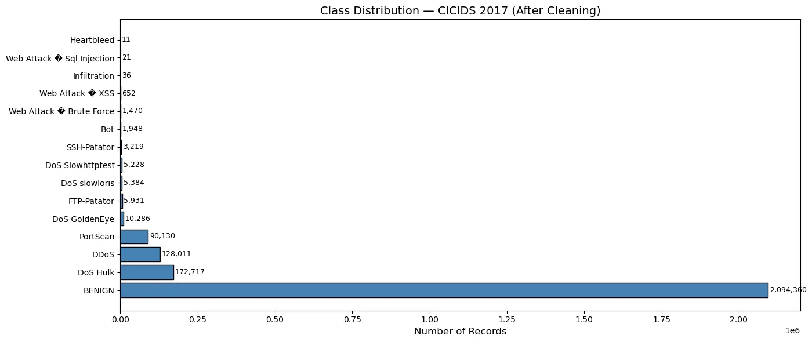
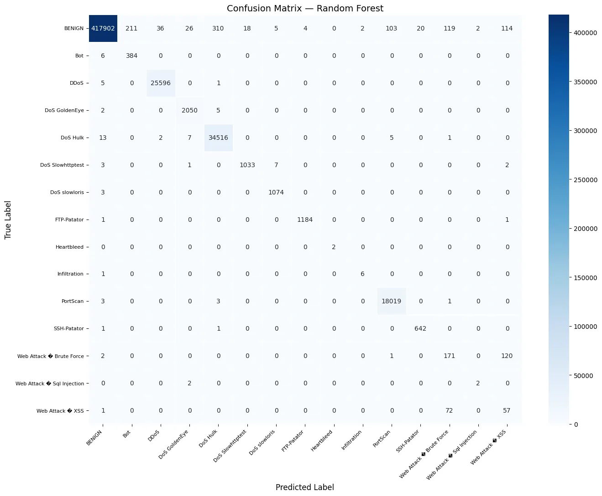
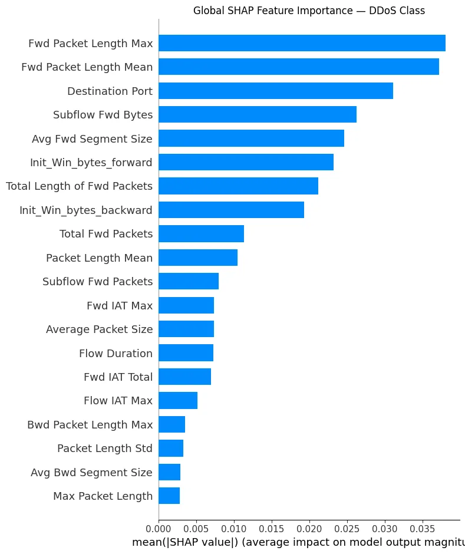

Network Intrusion Detection
A 15-class intrusion detector with an explanation for every alert, and a lesson in how a 99.8% score can hide the attacks that matter most.
- Status
- Complete
- Team
- 4 people
- Data
- CICIDS2017 · 2.52 M flows · 15 classes
- Stack
- Python · scikit-learn · XGBoost · SHAP · Dash · Tshark
The problem
An intrusion detector that only says "attack" isn't much use to the person who has to respond. They need to know which attack, and they need a reason to believe the alert. So the goal was two things at once: classify each network flow into one of 15 classes, and attach an explanation to every detection.
The data
CICIDS2017 is five days of captured traffic from the Canadian Institute for Cybersecurity. After cleaning: 2,519,404 flows, 78 numeric features each. It is brutally imbalanced. Benign traffic is 83% of the data; Heartbleed has 11 rows and Infiltration 36.

What we built
- Cleaning and preprocessing notebooks, then feature ranking down to the 25 most informative features.
- Random Forest, XGBoost and SVM trained and compared on weighted F1 and MCC. SMOTE oversampling was fitted on the training split only, so no synthetic rows leak into the test set.
- Per-flow SHAP attributions, so each detection comes with the features that pushed it there.
- A Dash / Plotly dashboard with live capture through Tshark for near-real-time monitoring.
| Model | Weighted F1 | MCC |
|---|---|---|
| Random Forest | 0.9977 | 0.9918 |
| XGBoost | 0.9676 | 0.8792 |
| SVM | 0.9071 | 0.7409 |

The number that matters
Table 1 looks finished. It isn't. Weighted F1 weights every class by how many flows it has, so the 418,872 benign test flows dominate it. Macro F1, where every class counts equally, is 0.85, and the per-class report shows where the model actually struggles:
| Class | F1 | Test samples |
|---|---|---|
| Benign, DDoS, PortScan, FTP-Patator | 1.00 | large |
| Infiltration | 0.80 | 7 |
| Bot | 0.78 | 390 |
| Web attack · brute force | 0.52 | 294 |
| Web attack · SQL injection | 0.50 | 4 |
| Web attack · XSS | 0.27 | 130 |
| Heartbleed | 1.00 | 2 |
Heartbleed's perfect score is two test rows. It means nothing. XSS at 0.27 is the honest weak point: the attacks a web application would actually see are the ones this model is worst at.
Explanations

Most of the top features are about packet sizes, which is what DDoS traffic should look like. Destination Port in third place is the interesting one. In CICIDS2017 the DDoS traffic all targets the same web server port, so a model can partly learn "this port" rather than "this behaviour". That is exactly the failure my research is about: accurate, confident, and right for a reason that won't transfer.
Errata
Random split. The train/test split and SMOTE are leak-free, but the split is random across all five days, so near-identical flows from the same attack session land on both sides. CICIDS2017 attacks are scheduled by day; a cross-day split (train on early days, test on later ones) is the honest test, and the numbers will drop.
Wrong headline metric. Weighted F1 was the headline. It should have been macro F1, with per-class results next to it.
Possible shortcut feature. Destination Port should be ablated, then the SHAP ranking re-checked, to see how much of the DDoS detection survives without it.
Source
github.com/TheCodeCipher/network-intrusion-detection-xai ↗ · team: Tarun Das, Sania Shanty, Arkodyuti Bhattacharyya, Adivi Ananya.